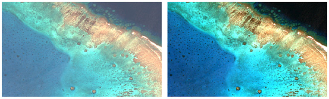

3 Week 3 Correction: Refining the Lens
3.1 Summary
In this lecture, we had a look about the difference between Push broom and Whisk broom Sensors, then we discovered that satellite images usually might has flaws. Geometric Correction, Atmospheric Correction, Topographic Correction, and Radiometric are all methods to correct the remote sensing products. The next part of the lecture was about the joining data techniques and how to make enhancement on the images.
3.1.1 Geometric Correction.
The process involves taking the coordinates of the dataset, applying a mathematical model to determine the transformation coefficients, and then using these coefficients to perform the geometric transformation, effectively altering the spatial arrangement of the features in the dataset. In other words it is the “ attempt to correct for positional errors and to transform the original image into a new image that has the geometric characteristics of a map. can you rephrase” I should add the citation (https://www.sciencedirect.com/topics/earth-and-planetary-sciences/geometric-correction#:~:text=Geometric%20corrections%20attempt%20to%20correct,geometric%20characteristics%20of%20a%20map.)

3.1.2 Atmospheric Correction.
Atmospheric correction is the process of eliminating scattering and absorption effects caused by the atmosphere, thereby revealing the surface reflectance that represents surface properties.
Methods to remove the atmosphere effect:
Relative: involves normalising images, which simplifies comparison with other images instead of directly eliminating atmospheric effects. One common technique for relative correction is Dark Object Subtraction (DOS), where dark objects with very low reflectance are subtracted from the image. This process not only standardizes the image but also mitigates atmospheric effects.

Absolute: involves assessing atmospheric conditions, along with the angles of illumination and viewing during image acquisition, to estimate the levels of scattering and absorption for each image band. Based on these factors, correction factors are determined to adjust the data from its initial at-sensor values to more accurate at-surface values.
Empirical line method: is an atmospheric correction technique that offers an alternative to radiative transfer modeling approaches. It provides a relatively straightforward approach to calibrating surface reflectance, as long as a series of calibration target measurements that remain constant over time are accessible.
Phases of Atmospheric Correction
Atmospheric correction is a two-phase process. In the initial phase, Digital Numbers (DNs) are transformed into radiance, and subsequently into top-of-atmosphere radiance. In the subsequent phase, top-of-atmosphere reflectance is converted to surface reflectance, also known as bottom-of-atmosphere reflectance or top-of-canopy reflectance, particularly in vegetation studies. The output image from this process is referred to as atmospherically corrected.

3.2 Application
Applying atmospheric corrections on satellite images is a crucial step that should be performed before conducting any further analysis or processing using those images. However, as we saw earlier, there are multiple approaches with different techniques that varies from image-based empirical correction to model-based methods. Each one of these techniques has its strength and weakness and, in this section, we will highlight two main studies that compared between different approaches like (QUAC, FLAASH and DOS). Those studies are “Comparison and evaluation of atmospheric correction algorithms of QUAC, DOS and FLAASH for HICO hyperspectral imagery” (Shi, Mao, 2016) and “A Comparison of Image-Based and Physics-Based Atmospheric Correction Methods for Extracting Snow and Vegetation Cover in Nepal Himalayas Using Landsat 8 OLI Images” (Niraj, Gupta 2022).
Comparison for HICO hyperspectral imagery paper:
This study concludes that all three types of corrections (FLAASH, QUAC, DOS) can remove the effect of atmosphere for HICO hyperspectral image. It also confirms that based on analysing the situ data, FLAASH model have a better performance than QUAC and DOS methods for reducing effect of atmosphere HICO images. Having said that, both QUAC and DOS depend on less input parameters and their computational speed is much faster than FLAASH.

Comparison for extracting snow and vegetation cover in Nepal Himalayas paper:
In this study, eight correction methods were applied on Landsat 8 OLI satellite image to find the best model for mapping snow and vegetation covered areas. The study found that FLAASH and 6SV methods determined best snow reflectance values, while DOS3 and QUAC were the worst. Additionally, FLAASH and SIAC methods showed greater vegetation reflectance values and higher ranks of correlating the extracted vegetation spectra with the standard spectra while DOS and QUAC were the lowest.
The study found when compared to other image-based correction methods (QUAC, Aref, COST, DOS, and DOS3), the FLAASH, SIAC, and 6SV methods generate higher snow and vegetation mean reflectance values, thus having a high possibility of mapping true snow and vegetation features.


3.2.0.1 Conclusion
Both studies explore different atmospheric correction methods for remote sensing imagery, with a focus on varying types of imagery and target variables. The first study evaluates FLAASH, QUAC, and DOS correction methods for HICO hyperspectral imagery, concluding that FLAASH performs better in removing atmospheric effects despite its slower computational speed. In contrast, the second study assesses eight correction methods applied to Landsat 8 OLI satellite imagery to map snow and vegetation cover in the Nepal Himalayas, finding that FLAASH and SIAC methods produce superior results for snow and vegetation reflectance. Ultimately, it’s not possible to determine that one method is superior to another. Therefore, the selection of an atmospheric correction method relies on the specific objectives and characteristics of the remote sensing analysis.
3.3 Reflection
To be honest, this lecture was quite challenging and lengthy, making it difficult to fully understand. Handling satellite images can indeed be tricky, yet mastering the art of manipulating them can prove invaluable for emphasizing specific points or shedding light on particular aspects. Understanding the various correction methods available is essential, as each method serves a distinct purpose. Moreover, selecting the appropriate method depends on the variables and characteristics of the analysis at hand. While I hope to avoid the need for performing corrections myself, as you mentioned, gaining insight into these behind-the-scenes processes has been enlightening and beneficial.
3.4 Reference
What is Atmospheric Correction in Remote Sensing?
(https://gisgeography.com/atmospheric-correction/)
Atmospheric Correction
(https://www.linkedin.com/pulse/atmospheric-correction-dinesh-shrestha/)
Remote Sensing Research Center
Comparison and evaluation of atmospheric correction algorithms of QUAC, DOS and FLAASH for HICO hyperspectral imagery(Shi, Mao, 2016)
()
A Comparison of Image-Based and Physics-Based Atmospheric Correction Methods for Extracting Snow and Vegetation Cover in Nepal Himalayas Using Landsat 8 OLI Images (Niraj, Gupta 2022).
()